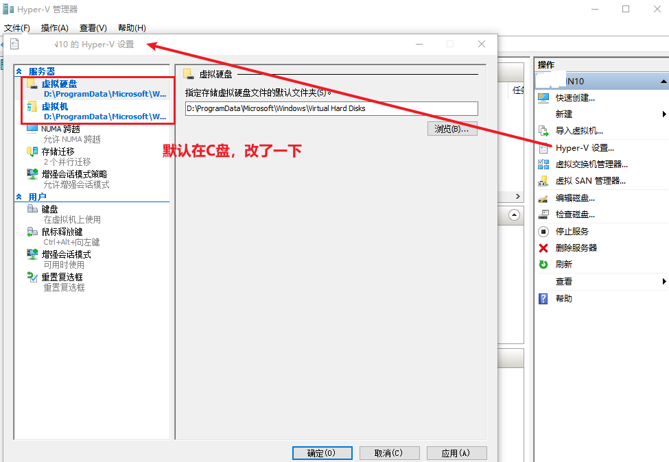
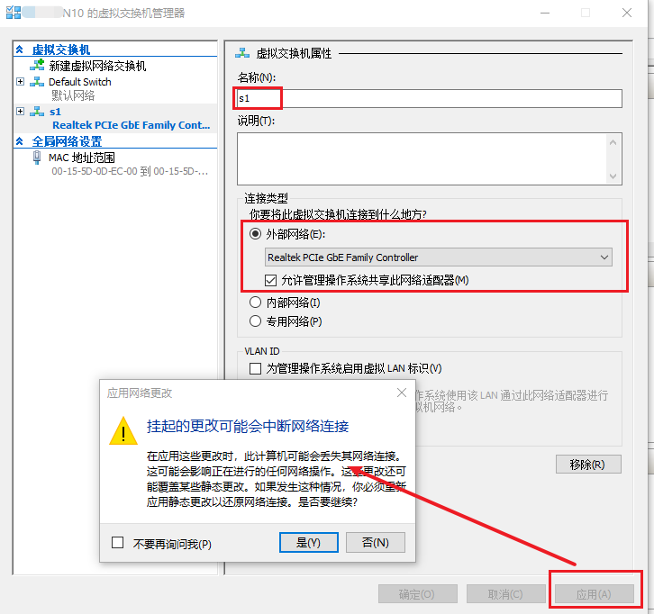
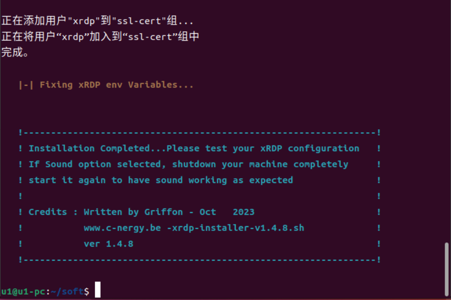
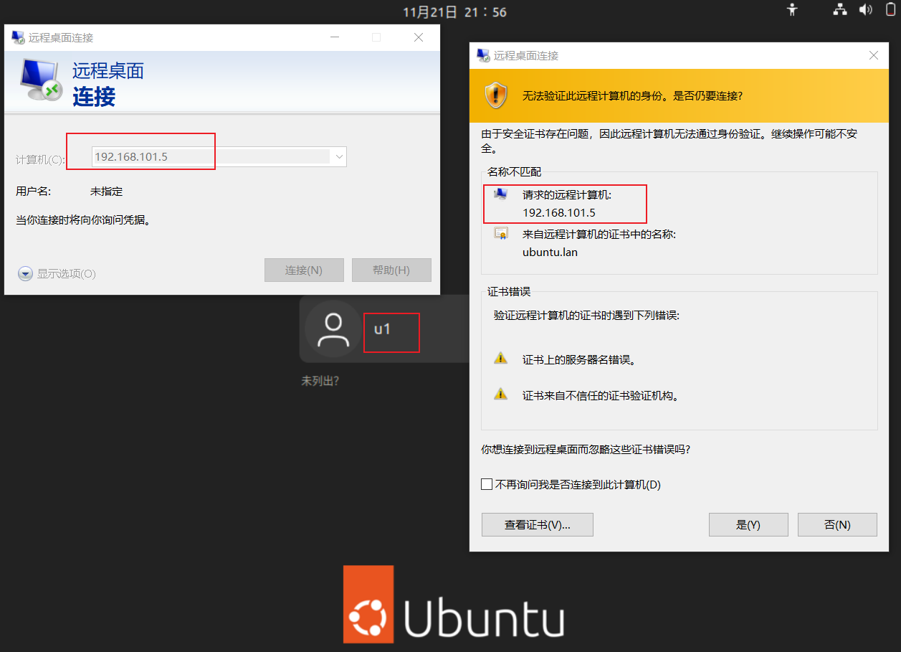

Hyper-V
整理一些
安装 Hyper-V
点击查看详细步骤
1、程序和功能：
2、启用或关闭Windows功能
3、选中Hyper-V并重启
4、Hyper-V 管理器
5、连接到本地服务器
6、Hyper-V 设置

这里将“虚拟硬盘”和“虚拟机”的路径切换到了D盘
7、新建虚拟交换机


想要虚拟机有一个独立的IP地址，所以选择用了“外部网络”
新建虚拟机
新建虚拟机向导
点击查看详细步骤
1、新建-》虚拟机
2、指定名称和位置
你也可以勾中复选框，修改位置。
3、二代虚拟机
4、分配内存

5、配置网络
6、连接虚拟硬盘
选择映像文件，这里是 ubuntu 22.04
7、摘要
虚拟机设置
点击查看详细步骤
1、设置CPU
你还可以在这里修改其他配置
2、连接 启动
注：这里启动异常了，这应该是第二代的问题，如果选择第一代没有这个问题。异常如下图：
解决办法如下：
Ubuntu
安装 ubuntu 22.04
在
点击查看详细步骤
1、入口
2、选择语言
3、键盘布局
4、更新和其他软件
说明：根据自己的实际情况选择。这里选择最小化安装。因为安装的时候断网了，所以你可以忽略“安装 Ubuntu 时下载更新”不可用
5、安装类型

6、您在什么地方？
7、你是谁？
注意：这里的“自动登录”要针对自己的实际情况看看是否需要选中。这里当时就是勾中了，导致一开机就直接登录了，如果此时想远程这台虚拟机，要么将登录的用老虎注销，要么添加一个新的用户
8、安装过程
9、安装完成（重启）
10、首次进入
选择软件源
你可以参考：Ubuntu - xiaodu114.github.io
配置远程连接
防火墙
弄了几台机器之后，发现了两种防火墙：ufw 和 firewalld。当然你如果觉得麻烦，可以禁用这些防火墙。
ufw
sudo ufw allow from any to any port 3389 proto tcp
firewalld
请稍后
xrdp
这种方式比较省事儿，强烈推荐
# 开机启动
sudo systemctl enable xrdp
# 禁止开机启动
sudo systemctl disable xrdp
# 查看状态
sudo systemctl status xrdp
# 启动服务
sudo systemctl start xrdp
# 停止服务
sudo systemctl stop xrdp
# 停止服务
sudo systemctl restart xrdp
xrdp 和 设置-》共享 应该不是一套体系。在设置中禁用共享，使用 xrdp 也可以远程
xrdp-installer 脚本安装
这里用到的是：Products | c-nergy.be。当时下载的版本是 1.4.8，例如：xrdp-installer-1.4.8.zip。之后解压，得到：
点击查看详细步骤
1、安装 xRDP 之前
2、修改权限
3、执行 xrdp-installer-1.4.8.sh

4、远程连接

因为这里远程时没有指定用户名，所以会有下面的步骤5。如果在这里指定了用户名，就不会出现下面步骤5中的界面了。如果你点击左下角的“显示选项”，会出现一些设置，例如：显示、本地资源等，和我们平时远程其他的windows电脑就一样了。
5、用户登录
注意：这里需要说明一点，选择的用户必须是注销或者没有登录状态，否则就连不上，具体的效果如下图：
因为这个问题，才会有上面安装时额外说明：不要勾中“自动登录”。当然，还得看你的个人需求，是吧。
apt 安装
sudo apt update
sudo apt install xrdp -y
# 如何卸载
sudo systemctl stop xrdp
sudo systemctl disable xrdp
sudo apt purge xrdp xserver-xorg-core xserver-xorg-input-all xorgxrdp
sudo apt autoremove
sudo apt autoclean
sudo apt update
GNOME 设置-》共享
这应该是 GNOME 内置的远程功能，用起来是真不方便啊。这玩意重启一次换一次密码，你受的了吗？不知道能不能固定……
参考链接
共享设置
电源设置
这里主要是息屏设置
屏幕设置
用户设置